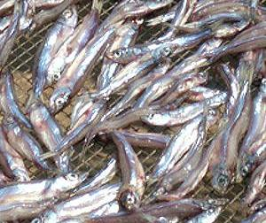
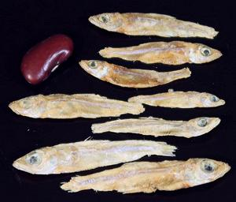

Kapenta / Matemba

[Kapenta, Matemba (Zambia, Malawi, Zimbabwe); Limnothrissa miodon
(Lake Tanganyika sardine) | Stolothrissa tanganicae
(Lake Tanganyika sprat)]
These fish both originated in Lake Tanganyika, but have been introduced to
other lakes in Southern Africa. They are an important human food in Zambia,
Malawi, and Zimbabwe. Forming large schools in open waters, they feed on
plankton, but come close to shore during breeding season. They are caught
at night using lights and large dip nets. They are then sun dried on
screens.
Adult L. miodon average around 4 inches (10 cm) long and adult
S. tanganicae average about 2-3/4 inches (7 cm). While still plentiful,
there is concern of depletion from overfishing, so some countries have banned
fishing for them close to shore during the breeding season and now require
licensing. IUCN Red Listed LC (Least Concern).
Photo by Emesik (severely cropped) distributed under license
Creative Commons
Attribution-ShareAlike v3.0 Unported.
More on the Sardines
More on the Herring Family

Buying:
For fresh, you have to be there, but nearly all these
fish are sun dried. This can be a problem as they are most available in the
rainy season. The photo specimens were dried with light salt. Since the largest
in the batch were 1.85 inches (4.70 cm) I presume these were
S. tanganicae. Fresh are sold near where they are caught. Dried are
often available on-line in North America from Zim Tuckshop, a Zimbabwe grocery
specialist. The photo specimens cost 2022 US $1.00 / ounce at 7 ounces weight
(200 gms).
Cooking:
The most popular way to use these dried fish is to
fry them in some oil, then stew them with onions, tomatoes and curry powder.
They may also be lightly battered and deep fried as a snack. Fresh ones can
be pan fried with onions, herbs and spices, or lightly battered and deep
fried.
sf_kapentaz 210524 - www.clovegarden.com
©Andrew Grygus - agryg@clovegarden.com - Photos on this
page not otherwise credited are © cg1 -
Linking to and non-commercial use of this page permitted